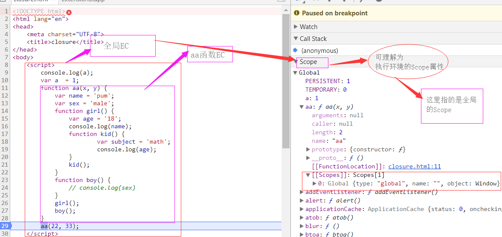

前言
闭包是js中的一个知识难点，却又是一块重点，笔者自己也参考了很多篇关于闭包讲解的文章，最好结合自己的理解才有了这么一篇文章
闭包的定义及创建方式
- 百度百科： 闭包就是能够读取其他函数内部变量的函数
- js高级程序设计： 闭包是指有权访问另一个函数作用域中的变量的函数
- 创建方式：通常是在一个函数中在定义一个或多个函数
- 简单来说，闭包是一个函数，当函数内部定义的函数需要访问外部函数的变量时，这个内部函数就叫闭包
在正式进入闭包之前，我们先来简单了解几个概念，后面会反复提及
执行上下文或是执行环境(Execution Context)
- 有两种环境，一种全局的执行上下文，一种局部执行上下文，也就是函数的执行上下文(调用一次创建一个)
- 执行上下文包含this对象，VO对象，作用域链，js代码
变量对象(VO)
- 若是全局环境，变量对象为GO对象，也就是window对象
- 若是在函数执行环境，变量对象为VO，当函数开始执行函数时，VO转为AO（活动对象），并且在该对象里会确定arguments
总结：AO与VO实质为同一东西，只是在函数执行前后有个转化过程，叫法变换而已，当需要用到环境中的某个变量时都会从这里面找。
从下面这段代码开始出发讲解闭包：
console.log(a);
var a = 1;
function aa(x, y) {
var name = 'pum';
var sex = 'male';
function girl() {
var age = '18';
console.log(name);
function kid() {
var subject = 'math';
console.log(age);
}
kid();
}
function boy() {
console.log(sex)
}
girl();
boy();
}
aa(22, 33);
首先浏览器会加载这段js代码，然后看看有没有简单的语法错误(如:中文符号)，接着在正式执行代码之前进行全局的预解析阶段
全局的预解析:
- 首先创建一个全局的执行环境，在该环境里创建两个东西
1. 变量对象：GO对象
2. 作用域链：ScopeChain(注意:该作用域链属于执行环境内部的)
- 接着js解释器会查找全局环境中的变量声明，函数声明，并把他们作为GO对象的属性名，其中变量声明的变量名值为undefined，函数声明的名值赋予函数体
在以上代码中，GO = { a:undefined, aa: function(){...}}，GO对象就是window对象。
注意顺序，先变量声明，后函数声明
预解析完后，该GO对象会成为全局执行环境的ScopeChain的第一位，即：ScopeChain = {0: GO}
接着生成的全局上下文被放入一个叫做执行环境栈的结构中
全局的预解析时发现了全局aa函数的定义，那么js引擎就会为aa函数添加一个隐式的属性[[Scopes]]
且在创建aa函数时，会创建一个预先包含全局变量对象的作用域链，这个作用域链被保存在内部的[[Scopes]]属性中，即: aa.[[Scopes]] = { 0:GO } 如下图

每次新创建好的执行上下文都会被放到一个栈的最顶端，js引擎会优先进入这个环境执行代码，执行完后销毁该执行上下文，意味着该环境中的所有数据都会被销毁，全局上下文在script内的代码全部执行完时才会销毁。
全局的预解析完后:
开始一行一行的执行代码，期间对变量声明进行赋值操作，在执行阶段会动态的改变GO里面已经作为属性名的变量名对应的值，也就是GO = { a: 1, aa:function(){...}}
当调用aa函数时，先进行预解析
1. 首先创建函数的执行上下文环境，通过复制函数的[[scopes]]属性中的对象初始化其执行环境中的作用域链(ScopeChain)，即: 执行环境中的ScopeChain 为 aa.[[Scopes]] ==> {0:GO}
2. 接着创建一个VO对象：该函数环境内找形参和var变量声明，作为VO对象属性名,值为undefined, 2. 初始化arguments. 3.将实参值与形参相统一 4.找出函数声明，作为属性名，值赋予函数体（若函数名与VO对象的属性名重名，则函数体覆盖同名属性名的值）
3. 当创建好VO对象后，VO被推入执行环境的ScopeChain的顶端，即: ScopeChain 为 {0:VO, 1: GO}，VO = {x:22, y:23, name:undefined, sex: undefined}
4. 创建好的执行期上下文环境压入执行栈中，在栈顶放着
5. 在aa函数的预解析阶段发现了其内部有boy，girl函数的定义或说是创建，js引擎为girl和boy函数分配一个[[Scopes]]属性，保存girl和boy各自的函数的初始化作用域链，即girl.[[Scopes]] 和boy.[[Scopes]] = {0: GO}
- 这里发生了奇特现象，js引擎会去看看函数内部定义的子函数是否需要用到父级函数中定义的变量
- 若是一级子函数内部不需要，就会看一级子函数内部定义的函数需要不，如此反复，若是要用的话，这个用到父级函数中定义的变量的子函数就变成闭包
- 接着，这个闭包函数的[[scopes]]的顶端会增加一个指针，指向这个闭包函数的父级函数的 执行环境中的VO对象
- 还没完，这个闭包函数有股魔力，它还会将上述的那个VO对象的指针 添加到 与闭包函数处于 同级的 函数的[[scopes]]的顶端
- 或者说，函数内定义的子函数只要有一个成为闭包，那么其他同级的函数都成为闭包，参见boy函数的[[scopes]]
- 同级的函数指的是函数都定义在于同一个父级函数中
- 在浏览器 debugger中显示的girl.[[Scopes]] 和boy.[[Scopes]] 为 {0： Closure (aa) {...}，1：GO} 如下图
- 在谷歌浏览器中只会显示子函数需要用到的外部函数中的变量
6. 然后aa函数执行，VO变成AO，变量进行相应的赋值操作，此时环境中的ScopeChain中的引用对应的值也会发生相应的改变
执行到 girl() 时，开始girl函数预解析，过程与aa函数一样，就无须多言啦，下面直接上图，this不算在VO对象内，而是在执行环境中的


执行环境中的ScopeChain里面存储的都是对象的引用，实际上是一个指针列表。
js引擎每次查找变量时都会从相应的执行环境中的ScopeChain顶端去找，依次向下，直到GO对象，没有找到就会报错。
函数作用域与函数执行环境的关系是什么呢?
函数执行环境中包含了什么呢？
- AO对象，而该对象内有着一系列在函数内部中声明的变量和arguments
- this对象
- ScopeChain
- 执行的js代码
想一想变量被保存在哪儿了，当然是AO对象内了，所以啊这个函数作用域就类似一堵围墙也可理解为规则，包围着函数的执行环境，不许外部访问，想要访问只能是拿到对应执行环境中的AO对象的引用，然后放到自身执行环境中的作用域链(ScopeChain)的顶端去，而只有子函数能拿到，且是通过函数的[[scopes]]属性拿到的，外部函数无法拿到，所以说函数外部无法访问函数内部的变量也就说的通了
内存泄漏的定义
- 通俗解释就是由于内存空间得不到释放，导致可用内存空间的不足，也就是可用内存的泄露
闭包的坏处
- 由于函数内部嵌套子函数，子函数用到了父函数中的变量，这个子函数就叫闭包，若是将子函数return出去，该子函数被外部变量接收，那么这个外部变量就保存了子函数引用，该子函数的作用域链（[[也就是scopes属性]]）引用着原来父函数的VO对象，这样就可以访问原来父函数中的变量了，当父函数执行完毕，父函数执行环境被销毁，但是父函数引用的那个VO对象不会被回收，因为子函数的作用域链仍然在引用它，而子函数也不会被回收，因为它被外部变量引用着，这样原来由于父函数而生成的VO对象就仍然占用着内存，开销变大，也就是内存泄漏了

- 要想防止内存泄漏，那么在使用完闭包后手动将cc = null，这样就没有变量引用着闭包函数了，该函数就会被垃圾回收了，同时该函数的作用域链也被销毁了，那么作用域链引用的变量对象也都被回收了，除了全局变量对象，只有页面关闭才会被回收